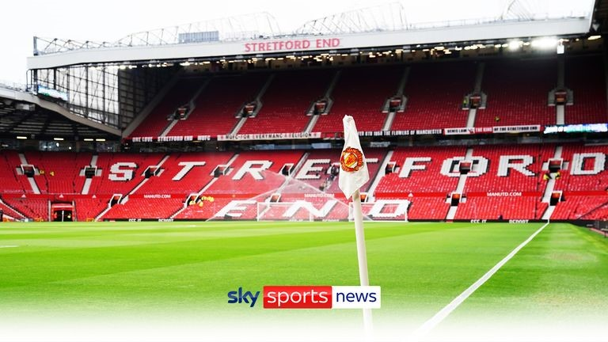

Cristiano Ronaldo leaves Manchester United by mutual consent following explosive interview with Piers Morgan
Man Utd issued a statement on Tuesday announcing they had reached a mutual agreement with Cristiano Ronaldo to terminate his contract; Ronaldo said: "I love Man Utd and I love the fans, that will never ever change. However, it feels like the right time for me to seek a new challenge"
Tuesday 22 November 2022 22:37, UKHow Man Utd and Ronaldo announced their split
A club statement read: "Cristiano Ronaldo is to leave Manchester United by mutual agreement, with immediate effect.
"The club thanks him for his immense contribution across two spells at Old Trafford, scoring 145 goals in 346 appearances, and wishes him and his family well for the future."Everyone at Manchester United remains focused on continuing the team's progress under Erik ten Hag and working together to deliver success on the pitch."
Issuing his own statement, Ronaldo said: "Following conversations with Manchester United we have mutually agreed to end our contract early.
"I love Manchester United and I love the fans, that will never ever change. However, it feels like the right time for me to seek a new challenge.
"I wish the team every success for the remainder of the season and for the future."
Glazers open to selling Man Utd
Manchester United could be sold by the Glazer family after a statement was issued saying the board were "exploring strategic alternatives".
The Glazers bought United in 2005 in a £790m leveraged buyout and had been unpopular with fans even before last year's moves to join a breakaway European Super League.
A statement from the club said: "Manchester United plc announces today that the company's board of directors is commencing a process to explore strategic alternatives for the club.
"The process is designed to enhance the club's future growth, with the ultimate goal of positioning the club to capitalize on opportunities both on the pitch and commercially.
"As part of this process, the board will consider all strategic alternatives, including new investment into the club, a sale, or other transactions involving the company."

Man Utd make Ronaldo's exit 'clean and quick'
United wanted Ronaldo's exit done "cleanly and quickly" and in as dignified a way as possible - not only to minimise distraction at Old Trafford but also to show respect to Portugal during the World Cup.
Sky Sports News also learned last week United did not accept some of the criticisms Ronaldo made in the interview.
Ronaldo criticised the club for a lack of investment in the 13 years since he first left Old Trafford. Sources have insisted United have invested in their facilities - notably the training ground, restaurant and swimming pool.
The Portuguese superstar was also critical of Ten Hag but sources insisted Ronaldo was treated with respect by the club and the manager.
It has been confirmed to Sky Sports News there was an offer from Saudi Arabia in the summer, which United would have accepted, but Ronaldo did not want to make the move. There were no other official offers for the player in the last transfer window.
Where next? 'I've had many offers...'
During his interview with Morgan, Ronaldo confirmed he had been offered a two-year contract worth €350m (£305m) from a Saudi Arabian club. However, he insisted he also had interest from top European sides, despite no offers being made for him in the summer transfer window.
"I will be honest with you, I didn't have many, many clubs but I have many, many offers of the other clubs," said Ronaldo. "What the press keep saying, the garbage, is that nobody wants me, which is completely wrong."
So what are the options for Ronaldo, who insists he wants to play until he is 40?
Europe, Saudi Arabia, MLS?

Kaveh Solhekol and Melissa Reddy analyse Ronaldo's dramatic exit from Manchester United and discuss his potential next move
Sky Sports News chief reporter Kaveh Solhekol:
"How many clubs out there are willing to pay him £500,000 per week? Somebody who is 37 years old, somebody who a lot of people would say is fading. Of course, he's not as good as he used to be.
"I think he will be more attractive to European clubs in the Champions League because he's a free agent. Anybody who wants to give him a contract doesn't have to deal with Manchester United and there's no transfer fee involved. You just sit down with (agent) Jorge Mendes and you sort out a deal. Obviously, he's going to want a big signing-on fee as well, but I wouldn't discount him moving to a European club, one in the Champions League.
"If he's chasing money, of course, you have to say Saudi Arabia. We know he had a big offer to go in the summer, so I think he's going to have opportunities there. Also, I wouldn't discount MLS. There are going to be clubs there who want to sign him as their marquee signing.
"But I don't think he's going to go to MLS. I think it's more likely he'll find a club in the Champions League and get what he wants.
"Paris Saint-Germain had been suggested as a possible destination, but they have absolutely no interest in signing Ronaldo even though he is now a free agent."
Where would Ronaldo start?
Sky Sports News senior reporter Melissa Reddy:
"Which top club would start Ronaldo every single game? At which club will he be guaranteed a place in the first XI? We saw in the summer that the only offer that came in for him was from Saudi Arabia - United were prepared to accept that and he didn't want to go.
"As a free agent if he puts in a really solid performance at the World Cup, people will forget his disruptive behaviour and he might get a move, but I can't see where and to who.
"Perhaps the solution is for Ronaldo to accept he is one of the greatest players we have ever seen - but he is 37, and progressive clubs - clubs that do have ambitions of winning the Champions League aren't going to funnel everything through him. He can't be the main man."
Mitten: Man Utd fans will wish Ronaldo well
United We Stand editor Andy Mitten to Sky Sports News:
"It's the sensible thing. After that interview last week this is the right decision. The club didn't want to hang around, they wanted to come to an agreement with Cristiano Ronaldo's people.
"He didn't want to be at Manchester United. He wanted to leave the club, that's been true for four or five months now and he'll get his wish and both parties will move on.
"History will still remember Cristiano Ronaldo well as a Manchester United player, probably the best player I have ever seen play for Manchester United in his first spell at Old Trafford - and he was a success last season.
"This season has not been a success and it's been frustrating watching him and seeing his decline in real time. But he feels that he can still contribute a lot as a footballer, that's just not going to be at Manchester United.
"I think most Manchester United fans will wish him well so long as he's not at Liverpool or Manchester City."
Neville: Ronaldo knew interview would end his Man Utd career
On Friday, Sky Sports' Gary Neville said there was "no way back" for Ronaldo at Manchester United following his interview.
"He wouldn't have done this interview if he wanted a way back. He knew it would bring the headlines it has and be the end of his Manchester United career," said Neville.
"[Man Utd] know they have to terminate Cristiano's contract or they basically open up a precedent so any player can criticise them in the future."
Asked for his thoughts and whether he was against Ronaldo, who criticised his former team-mate in the interview, Neville replied: "It's not true, what he said, but all's fair in love and war.
"I live in the game of criticism and know I have to accept it, and I get plenty of it back. I love all my team-mates I played with, including Cristiano.
"I'm not against Ronaldo - far from it. I couldn't have any more admiration for him, I couldn't have any more respect for him. He's the greatest player I've ever seen and he's the most talented player I ever played with."
Ronaldo on damaged relationship with Ten Hag - and stats that support the manager
"I understand that in a new job [you try to make an impression.] Manchester was so bad in the last five years that they should clean the house, let's say it in that way," said Ronaldo.
"But the way they approach, the way the press make this so big. I really understand in the beginning because I didn't do the pre-season, I don't start to play, but going more further than that.
"Other things happen that people, they don't know. And I'm not hiding that the empathy with the coach is not good. I'm honest."
One of Ronaldo's standout quotes about Ten Hag from his interview was: "I don't have respect for him because he doesn't have respect for me."

Were Ronaldo's new jabs at Ten Hag simply in reference to his lack of starts in the Premier League this season?
It's not clear because, after all, this is a player who was given the captain's armband soon after walking out of the team's win over Tottenham before full-time. When United were thrashed at Manchester City, Ten Hag said he did not sub Ronaldo on "out of respect for his big career".
United felt they bent over backwards to accommodate Ronaldo and Ten Hag always insisted he was an important part of his plans.
What United did not do was indulge Ronaldo and guarantee him a starting spot. He was their top scorer last season but with Ten Hag now in charge the stats backed up the Dutchman's use of Ronaldo.
When Ronaldo did not start in the Premier League this season, United's win rate trebled, their points return doubled, their scoring rate quadrupled and the team ran, on average, 4km more per game.
An abrupt end after a fairytale start
Ronaldo's departure signals an abrupt end to a career at United that was revived amid much fanfare in August last year.
He had looked set to join rivals Manchester City from Juventus but a late intervention from United took him back to Old Trafford.
Ronaldo first joined United from Sporting Lisbon as a teenager in 2003. He won three Premier League titles and the Champions League before going on to even greater success with Real Madrid.After nine years at the Bernabeu and a further three at Juve, he returned to United as a five-time Ballon d'Or winner.
He scored 18 goals in the Premier League last season but United struggled, finishing sixth in a campaign in which they were managed by Ole Gunnar Solskjaer, Michael Carrick and Ralf Rangnick.
He made a slow start to the current campaign under new boss Ten Hag after missing their pre-season tour, starting just four Premier League games. There were further controversies as he left the ground early during a friendly and refused to come on as a substitute against Tottenham.
Ronaldo leaves United for what is surely the final time having scored a total of 145 goals in 346 appearances.
Mailing
Sign up for out mailing list to get latest update and offers
We respect your privacy
© Copyright: Group 5 - FPT Aptech